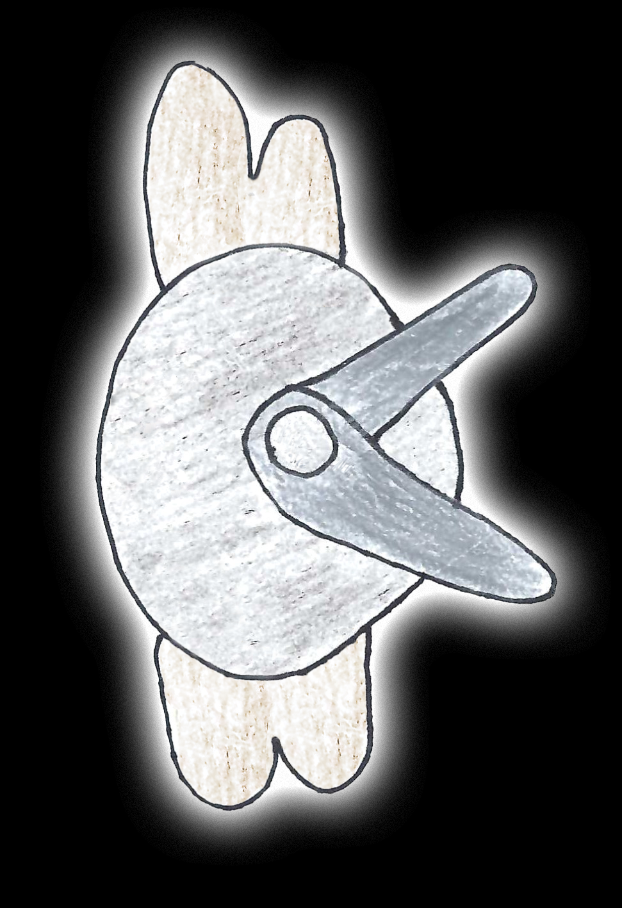
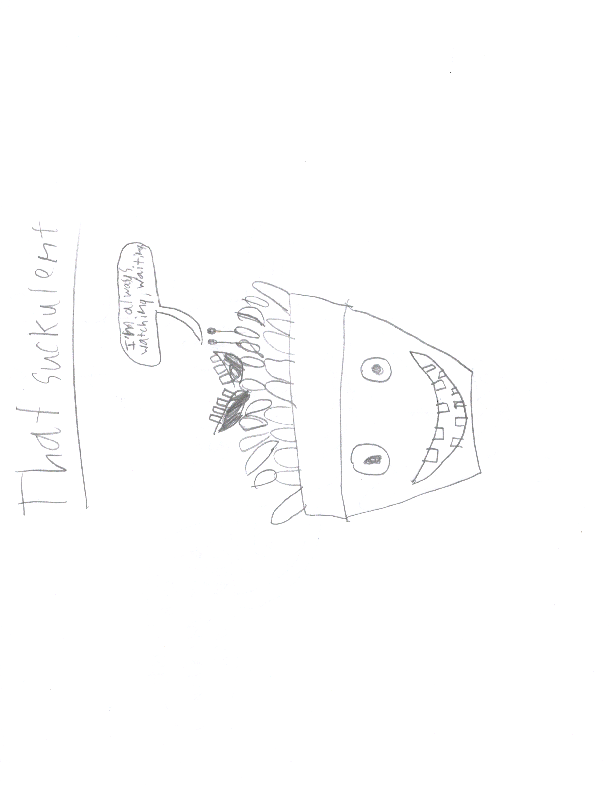

Shaver: The Shaver is a large insect (6 inches across and 4 inches tall). It flies around hairy people and shaves their heads, turning them in to balders. Its wings are reinforced with the hair it eats. The shaver above is not yet an adult because its blades are not fully sharpened. It glows in the dark and has blades very similar to scissors and sound like "shave" when they move. The shavers lifespan is approximately 10 years.

That Succulent Is A Succulent that sits on a windowsill, watching you as you go about life. If you get to close to it, it will violently suck you into it's fleshy interior and you will die a painful death.

That Pickle Is A Person-Like Pickle Who Loves Pickles